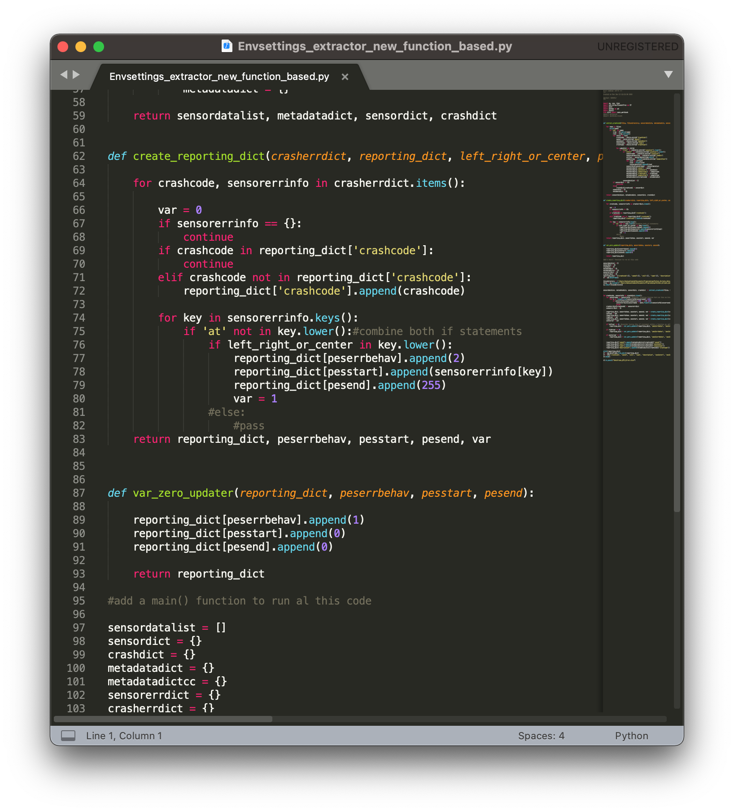
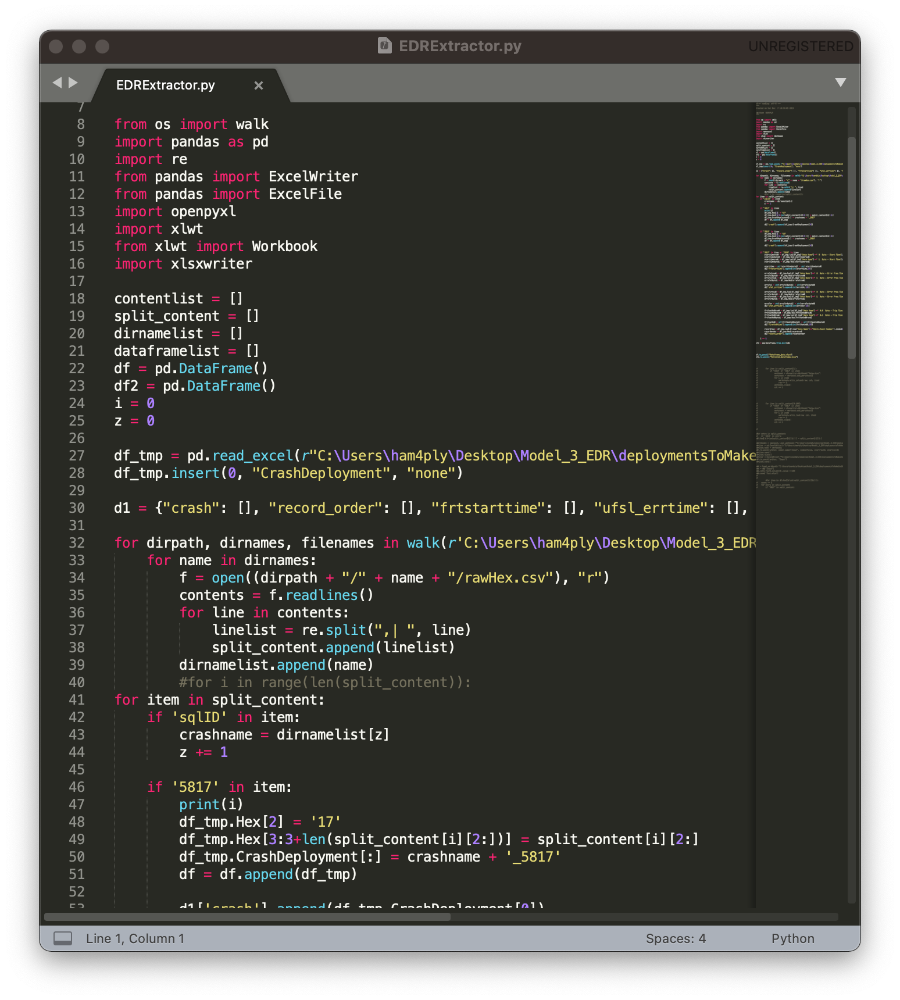
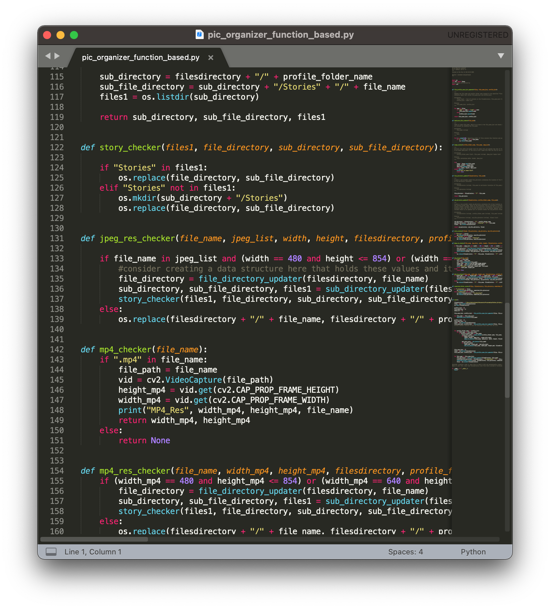

Portfolio Project Details
Sensor Corruption Script Details
Created a python based script that could parse XML files and detect sensor data corruption from a user-specified group of sensors using the XML ElementTree API. Once the corruption was identified, the script would note the time of corruption along with the crash metadata. This information would be stored in various nested dictionaries and then copied into a DataFrame using the pandas library, which the script would save as an excel file in a specified crash simulation friendly format. The information in this excel file was used for crash simulation purposes.
Data Decoder Script
Created a python based data decoder script by utilizing the Pandas library. The script extracted raw data from any given number of CSV files present within a specific directory, formatted the data, then stored the data into a DataFrame that was read in from excel as a decoder sheet. The script then labelled and stored user-specified data into a dictionary which could be input into another DataFrame for reporting.
Picture Organizer Script
This script is something I worked on for a classmate. He had some requirements for how he needed to have various images on his computer sorted. From those requirements, this script was created. Undertaking this project gave me experience with using various libraries to extract information about images and videos and organize files according to such information. This project is data science relevant as it is another crucial aspect of data processing.